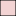
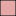
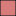
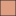

<!doctype html>
<html lang="en">
    <head>
        <meta charset="utf-8">
        <meta http-equiv="X-UA-Compatible" content="IE=edge">
        <meta name="viewport" content="initial-scale=1,user-scalable=no,maximum-scale=1,width=device-width">
        <meta name="mobile-web-app-capable" content="yes">
        <meta name="apple-mobile-web-app-capable" content="yes">
        <link rel="stylesheet" href="css/leaflet.css"><link rel="stylesheet" href="css/L.Control.Locate.min.css">
        <link rel="stylesheet" href="css/qgis2web.css"><link rel="stylesheet" href="css/fontawesome-all.min.css">
        <link rel="stylesheet" href="css/leaflet-control-geocoder.Geocoder.css">
        <link rel="stylesheet" href="css/leaflet-measure.css">
        <style>
        #map {
            width: 1641px;
            height: 778px;
        }
        </style>
        <title>Legnicko-Głogowski Okręg Miedziowy</title>
    </head>
    <body>
        <div id="map">
        </div>
        <script src="js/qgis2web_expressions.js"></script>
        <script src="js/leaflet.js"></script><script src="js/L.Control.Locate.min.js"></script>
        <script src="js/multi-style-layer.js"></script>
        <script src="js/leaflet.rotatedMarker.js"></script>
        <script src="js/leaflet.pattern.js"></script>
        <script src="js/leaflet-hash.js"></script>
        <script src="js/Autolinker.min.js"></script>
        <script src="js/rbush.min.js"></script>
        <script src="js/labelgun.min.js"></script>
        <script src="js/labels.js"></script>
        <script src="js/leaflet-control-geocoder.Geocoder.js"></script>
        <script src="js/leaflet-measure.js"></script>
        <script src="data/Powiaty_1.js"></script>
        <script src="data/Zoamiedzi_2.js"></script>
        <script src="data/Wydobyciew2022tyston_3.js"></script>
        <script src="data/Terenygrnicze_4.js"></script>
        <script src="data/Otworywiertnicze_5.js"></script>
        <script src="data/Hutymiedzi_6.js"></script>
        <script>
        var map = L.map('map', {
            zoomControl:true, maxZoom:28, minZoom:1
        }).fitBounds([[51.21700039385899,15.225993068226373],[51.81053950100951,17.117981682156273]]);
        var hash = new L.Hash(map);
        map.attributionControl.setPrefix('<a href="https://github.com/tomchadwin/qgis2web" target="_blank">qgis2web</a> &middot; <a href="https://leafletjs.com" title="A JS library for interactive maps">Leaflet</a> &middot; <a href="https://qgis.org">QGIS</a>');
        var autolinker = new Autolinker({truncate: {length: 30, location: 'smart'}});
        L.control.locate({locateOptions: {maxZoom: 19}}).addTo(map);
        var measureControl = new L.Control.Measure({
            position: 'topleft',
            primaryLengthUnit: 'meters',
            secondaryLengthUnit: 'kilometers',
            primaryAreaUnit: 'sqmeters',
            secondaryAreaUnit: 'hectares'
        });
        measureControl.addTo(map);
        document.getElementsByClassName('leaflet-control-measure-toggle')[0]
        .innerHTML = '';
        document.getElementsByClassName('leaflet-control-measure-toggle')[0]
        .className += ' fas fa-ruler';
        var bounds_group = new L.featureGroup([]);
        function setBounds() {
        }
        map.createPane('pane_ESRIWorldTopo_0');
        map.getPane('pane_ESRIWorldTopo_0').style.zIndex = 400;
        var layer_ESRIWorldTopo_0 = L.tileLayer('https://services.arcgisonline.com/ArcGIS/rest/services/World_Topo_Map/MapServer/tile/{z}/{y}/{x}', {
            pane: 'pane_ESRIWorldTopo_0',
            opacity: 1.0,
            attribution: '',
            minZoom: 1,
            maxZoom: 28,
            minNativeZoom: 0,
            maxNativeZoom: 20
        });
        layer_ESRIWorldTopo_0;
        map.addLayer(layer_ESRIWorldTopo_0);
        function pop_Powiaty_1(feature, layer) {
            var popupContent = '<table>\
                    <tr>\
                        <th scope="row">Nazwa</th>\
                        <td>' + (feature.properties['JPT_NAZWA_'] !== null ? autolinker.link(feature.properties['JPT_NAZWA_'].toLocaleString()) : '') + '</td>\
                    </tr>\
                    <tr>\
                        <th scope="row">REGON</th>\
                        <td>' + (feature.properties['REGON'] !== null ? autolinker.link(feature.properties['REGON'].toLocaleString()) : '') + '</td>\
                    </tr>\
                </table>';
            layer.bindPopup(popupContent, {maxHeight: 400});
        }

        function style_Powiaty_1_0() {
            return {
                pane: 'pane_Powiaty_1',
                opacity: 1,
                color: 'rgba(35,35,35,1.0)',
                dashArray: '',
                lineCap: 'butt',
                lineJoin: 'miter',
                weight: 2.0, 
                fillOpacity: 0,
                interactive: true,
            }
        }
        map.createPane('pane_Powiaty_1');
        map.getPane('pane_Powiaty_1').style.zIndex = 401;
        map.getPane('pane_Powiaty_1').style['mix-blend-mode'] = 'normal';
        var layer_Powiaty_1 = new L.geoJson(json_Powiaty_1, {
            attribution: '',
            interactive: true,
            dataVar: 'json_Powiaty_1',
            layerName: 'layer_Powiaty_1',
            pane: 'pane_Powiaty_1',
            onEachFeature: pop_Powiaty_1,
            style: style_Powiaty_1_0,
        });
        bounds_group.addLayer(layer_Powiaty_1);
        map.addLayer(layer_Powiaty_1);
        function pop_Zoamiedzi_2(feature, layer) {
            var popupContent = '<table>\
                    <tr>\
                        <th scope="row">ID złoża</th>\
                        <td>' + (feature.properties['ID_ZLOZA'] !== null ? autolinker.link(feature.properties['ID_ZLOZA'].toLocaleString()) : '') + '</td>\
                    </tr>\
                    <tr>\
                        <th scope="row">Nazwa złoża</th>\
                        <td>' + (feature.properties['NAZWA_ZLOZ'] !== null ? autolinker.link(feature.properties['NAZWA_ZLOZ'].toLocaleString()) : '') + '</td>\
                    </tr>\
                    <tr>\
                        <th scope="row">Nr dokumentu</th>\
                        <td>' + (feature.properties['NR_DOK'] !== null ? autolinker.link(feature.properties['NR_DOK'].toLocaleString()) : '') + '</td>\
                    </tr>\
                </table>';
            layer.bindPopup(popupContent, {maxHeight: 400});
        }

        function style_Zoamiedzi_2_0() {
            return {
                pane: 'pane_Zoamiedzi_2',
                opacity: 1,
                color: 'rgba(35,35,35,1.0)',
                dashArray: '',
                lineCap: 'butt',
                lineJoin: 'miter',
                weight: 1.0, 
                fill: true,
                fillOpacity: 1,
                fillColor: 'rgba(223,158,130,1.0)',
                interactive: true,
            }
        }
        map.createPane('pane_Zoamiedzi_2');
        map.getPane('pane_Zoamiedzi_2').style.zIndex = 402;
        map.getPane('pane_Zoamiedzi_2').style['mix-blend-mode'] = 'normal';
        var layer_Zoamiedzi_2 = new L.geoJson(json_Zoamiedzi_2, {
            attribution: '',
            interactive: true,
            dataVar: 'json_Zoamiedzi_2',
            layerName: 'layer_Zoamiedzi_2',
            pane: 'pane_Zoamiedzi_2',
            onEachFeature: pop_Zoamiedzi_2,
            style: style_Zoamiedzi_2_0,
        });
        bounds_group.addLayer(layer_Zoamiedzi_2);
        map.addLayer(layer_Zoamiedzi_2);
        function pop_Wydobyciew2022tyston_3(feature, layer) {
            var popupContent = '<table>\
                    <tr>\
                        <th scope="row">ID złoża</th>\
                        <td>' + (feature.properties['ID_ZLOZA'] !== null ? autolinker.link(feature.properties['ID_ZLOZA'].toLocaleString()) : '') + '</td>\
                    </tr>\
                    <tr>\
                        <th scope="row">Nazwa złoża</th>\
                        <td>' + (feature.properties['NAZWA_ZLOZ'] !== null ? autolinker.link(feature.properties['NAZWA_ZLOZ'].toLocaleString()) : '') + '</td>\
                    </tr>\
                    <tr>\
                        <th scope="row">Nr dokumentu</th>\
                        <td>' + (feature.properties['NR_DOK'] !== null ? autolinker.link(feature.properties['NR_DOK'].toLocaleString()) : '') + '</td>\
                    </tr>\
                    <tr>\
                        <th scope="row">Wydobycie [tys. ton]</th>\
                        <td>' + (feature.properties['Wydobycie'] !== null ? autolinker.link(feature.properties['Wydobycie'].toLocaleString()) : '') + '</td>\
                    </tr>\
                </table>';
            layer.bindPopup(popupContent, {maxHeight: 400});
        }

        function style_Wydobyciew2022tyston_3_0(feature) {
            if (feature.properties['Wydobycie'] >= 0.000000 && feature.properties['Wydobycie'] <= 0.000000 ) {
                return {
                pane: 'pane_Wydobyciew2022tyston_3',
                opacity: 1,
                color: 'rgba(35,35,35,1.0)',
                dashArray: '',
                lineCap: 'butt',
                lineJoin: 'miter',
                weight: 1.0, 
                fill: true,
                fillOpacity: 1,
                fillColor: 'rgba(255,255,255,1.0)',
                interactive: true,
            }
            }
            if (feature.properties['Wydobycie'] >= 0.000000 && feature.properties['Wydobycie'] <= 2500.000000 ) {
                return {
                pane: 'pane_Wydobyciew2022tyston_3',
                opacity: 1,
                color: 'rgba(35,35,35,1.0)',
                dashArray: '',
                lineCap: 'butt',
                lineJoin: 'miter',
                weight: 1.0, 
                fill: true,
                fillOpacity: 1,
                fillColor: 'rgba(242,211,211,1.0)',
                interactive: true,
            }
            }
            if (feature.properties['Wydobycie'] >= 2500.000000 && feature.properties['Wydobycie'] <= 5000.000000 ) {
                return {
                pane: 'pane_Wydobyciew2022tyston_3',
                opacity: 1,
                color: 'rgba(35,35,35,1.0)',
                dashArray: '',
                lineCap: 'butt',
                lineJoin: 'miter',
                weight: 1.0, 
                fill: true,
                fillOpacity: 1,
                fillColor: 'rgba(229,167,167,1.0)',
                interactive: true,
            }
            }
            if (feature.properties['Wydobycie'] >= 5000.000000 && feature.properties['Wydobycie'] <= 8000.000000 ) {
                return {
                pane: 'pane_Wydobyciew2022tyston_3',
                opacity: 1,
                color: 'rgba(35,35,35,1.0)',
                dashArray: '',
                lineCap: 'butt',
                lineJoin: 'miter',
                weight: 1.0, 
                fill: true,
                fillOpacity: 1,
                fillColor: 'rgba(216,123,123,1.0)',
                interactive: true,
            }
            }
            if (feature.properties['Wydobycie'] >= 8000.000000 && feature.properties['Wydobycie'] <= 10274.000000 ) {
                return {
                pane: 'pane_Wydobyciew2022tyston_3',
                opacity: 1,
                color: 'rgba(35,35,35,1.0)',
                dashArray: '',
                lineCap: 'butt',
                lineJoin: 'miter',
                weight: 1.0, 
                fill: true,
                fillOpacity: 1,
                fillColor: 'rgba(203,80,80,1.0)',
                interactive: true,
            }
            }
        }
        map.createPane('pane_Wydobyciew2022tyston_3');
        map.getPane('pane_Wydobyciew2022tyston_3').style.zIndex = 403;
        map.getPane('pane_Wydobyciew2022tyston_3').style['mix-blend-mode'] = 'normal';
        var layer_Wydobyciew2022tyston_3 = new L.geoJson(json_Wydobyciew2022tyston_3, {
            attribution: '',
            interactive: true,
            dataVar: 'json_Wydobyciew2022tyston_3',
            layerName: 'layer_Wydobyciew2022tyston_3',
            pane: 'pane_Wydobyciew2022tyston_3',
            onEachFeature: pop_Wydobyciew2022tyston_3,
            style: style_Wydobyciew2022tyston_3_0,
        });
        bounds_group.addLayer(layer_Wydobyciew2022tyston_3);
        function pop_Terenygrnicze_4(feature, layer) {
            var popupContent = '<table>\
                    <tr>\
                        <td colspan="2">' + (feature.properties['NAZWA'] !== null ? autolinker.link(feature.properties['NAZWA'].toLocaleString()) : '') + '</td>\
                    </tr>\
                </table>';
            layer.bindPopup(popupContent, {maxHeight: 400});
        }

        var pattern_Terenygrnicze_4_0 = new L.StripePattern({
            weight: 0.2,
            spaceWeight: 2.0,
            color: '#000000',
            opacity: 1.0,
            spaceOpacity: 0,
            angle: 315
        });
        pattern_Terenygrnicze_4_0.addTo(map);
        function style_Terenygrnicze_4_0() {
            return {
                pane: 'pane_Terenygrnicze_4',
                stroke: false,
                fillOpacity: 1,
                fillPattern: pattern_Terenygrnicze_4_0,
                interactive: true,
            }
        }
        function style_Terenygrnicze_4_1() {
            return {
                pane: 'pane_Terenygrnicze_4',
                opacity: 1,
                color: 'rgba(0,0,0,1.0)',
                dashArray: '',
                lineCap: 'square',
                lineJoin: 'bevel',
                weight: 1.0,
                fillOpacity: 0,
                interactive: true,
            }
        }
        map.createPane('pane_Terenygrnicze_4');
        map.getPane('pane_Terenygrnicze_4').style.zIndex = 404;
        map.getPane('pane_Terenygrnicze_4').style['mix-blend-mode'] = 'normal';
        var layer_Terenygrnicze_4 = new L.geoJson.multiStyle(json_Terenygrnicze_4, {
            attribution: '',
            interactive: true,
            dataVar: 'json_Terenygrnicze_4',
            layerName: 'layer_Terenygrnicze_4',
            pane: 'pane_Terenygrnicze_4',
            onEachFeature: pop_Terenygrnicze_4,
            styles: [style_Terenygrnicze_4_0,style_Terenygrnicze_4_1,]
        });
        bounds_group.addLayer(layer_Terenygrnicze_4);
        function pop_Otworywiertnicze_5(feature, layer) {
            var popupContent = '<table>\
                    <tr>\
                        <th scope="row">Nazwa</th>\
                        <td>' + (feature.properties['NAZWA'] !== null ? autolinker.link(feature.properties['NAZWA'].toLocaleString()) : '') + '</td>\
                    </tr>\
                    <tr>\
                        <th scope="row">Głębokość</th>\
                        <td>' + (feature.properties['GLEBOKOSC'] !== null ? autolinker.link(feature.properties['GLEBOKOSC'].toLocaleString()) : '') + '</td>\
                    </tr>\
                    <tr>\
                        <th scope="row">Stratygrafia</th>\
                        <td>' + (feature.properties['STRAT'] !== null ? autolinker.link(feature.properties['STRAT'].toLocaleString()) : '') + '</td>\
                    </tr>\
                    <tr>\
                        <th scope="row">Cel wiercenia</th>\
                        <td>' + (feature.properties['CEL_WIERC'] !== null ? autolinker.link(feature.properties['CEL_WIERC'].toLocaleString()) : '') + '</td>\
                    </tr>\
                    <tr>\
                        <th scope="row">Rok wiercenia</th>\
                        <td>' + (feature.properties['ROK'] !== null ? autolinker.link(feature.properties['ROK'].toLocaleString()) : '') + '</td>\
                    </tr>\
                    <tr>\
                        <th scope="row">Nr dokumentu</th>\
                        <td>' + (feature.properties['NR_DOK'] !== null ? autolinker.link(feature.properties['NR_DOK'].toLocaleString()) : '') + '</td>\
                    </tr>\
                </table>';
            layer.bindPopup(popupContent, {maxHeight: 400});
        }

        function style_Otworywiertnicze_5_0() {
            return {
                pane: 'pane_Otworywiertnicze_5',
        rotationAngle: 0.0,
        rotationOrigin: 'center center',
        icon: L.icon({
            iconUrl: 'markers/Otworywiertnicze_5.svg',
            iconSize: [7.6, 7.6]
        }),
                interactive: true,
            }
        }
        map.createPane('pane_Otworywiertnicze_5');
        map.getPane('pane_Otworywiertnicze_5').style.zIndex = 405;
        map.getPane('pane_Otworywiertnicze_5').style['mix-blend-mode'] = 'normal';
        var layer_Otworywiertnicze_5 = new L.geoJson(json_Otworywiertnicze_5, {
            attribution: '',
            interactive: true,
            dataVar: 'json_Otworywiertnicze_5',
            layerName: 'layer_Otworywiertnicze_5',
            pane: 'pane_Otworywiertnicze_5',
            onEachFeature: pop_Otworywiertnicze_5,
            pointToLayer: function (feature, latlng) {
                var context = {
                    feature: feature,
                    variables: {}
                };
                return L.marker(latlng, style_Otworywiertnicze_5_0(feature));
            },
        });
        bounds_group.addLayer(layer_Otworywiertnicze_5);
        function pop_Hutymiedzi_6(feature, layer) {
            var popupContent = '<table>\
                    <tr>\
                        <th scope="row">Nazwa</th>\
                        <td>' + (feature.properties['Nazwa'] !== null ? autolinker.link(feature.properties['Nazwa'].toLocaleString()) : '') + '</td>\
                    </tr>\
                </table>';
            layer.bindPopup(popupContent, {maxHeight: 400});
        }

        function style_Hutymiedzi_6_0() {
            return {
                pane: 'pane_Hutymiedzi_6',
        rotationAngle: 0.0,
        rotationOrigin: 'center center',
        icon: L.icon({
            iconUrl: 'markers/Hutymiedzi_6.svg',
            iconSize: [21.279999999999998, 21.279999999999998]
        }),
                interactive: true,
            }
        }
        map.createPane('pane_Hutymiedzi_6');
        map.getPane('pane_Hutymiedzi_6').style.zIndex = 406;
        map.getPane('pane_Hutymiedzi_6').style['mix-blend-mode'] = 'normal';
        var layer_Hutymiedzi_6 = new L.geoJson(json_Hutymiedzi_6, {
            attribution: '',
            interactive: true,
            dataVar: 'json_Hutymiedzi_6',
            layerName: 'layer_Hutymiedzi_6',
            pane: 'pane_Hutymiedzi_6',
            onEachFeature: pop_Hutymiedzi_6,
            pointToLayer: function (feature, latlng) {
                var context = {
                    feature: feature,
                    variables: {}
                };
                return L.marker(latlng, style_Hutymiedzi_6_0(feature));
            },
        });
        bounds_group.addLayer(layer_Hutymiedzi_6);
            var title = new L.Control();
            title.onAdd = function (map) {
                this._div = L.DomUtil.create('div', 'info');
                this.update();
                return this._div;
            };
            title.update = function () {
                this._div.innerHTML = '<h2>Legnicko-Głogowski Okręg Miedziowy</h2>';
            };
            title.addTo(map);
        var osmGeocoder = new L.Control.Geocoder({
            collapsed: true,
            position: 'topleft',
            text: 'Search',
            title: 'Testing'
        }).addTo(map);
        document.getElementsByClassName('leaflet-control-geocoder-icon')[0]
        .className += ' fa fa-search';
        document.getElementsByClassName('leaflet-control-geocoder-icon')[0]
        .title += 'Search for a place';
        var baseMaps = {};
        L.control.layers(baseMaps,{' Huty miedzi': layer_Hutymiedzi_6,' Otwory wiertnicze': layer_Otworywiertnicze_5,' Tereny górnicze': layer_Terenygrnicze_4,'Wydobycie w 2022 [tys. ton]<br /><table><tr><td style="text-align: center;"></td><td>0</td></tr><tr><td style="text-align: center;"></td><td>1 - 2500</td></tr><tr><td style="text-align: center;"></td><td>2500 - 5000</td></tr><tr><td style="text-align: center;"></td><td>5000 - 8000</td></tr><tr><td style="text-align: center;"></td><td>> 8000</td></tr></table>': layer_Wydobyciew2022tyston_3,' Złoża miedzi': layer_Zoamiedzi_2,' Powiaty': layer_Powiaty_1,"ESRI World Topo": layer_ESRIWorldTopo_0,},{collapsed:false}).addTo(map);
        setBounds();
        var i = 0;
        layer_Zoamiedzi_2.eachLayer(function(layer) {
            var context = {
                feature: layer.feature,
                variables: {}
            };
            layer.bindTooltip((layer.feature.properties['NAZWA_ZLOZ'] !== null?String('<div style="color: #323232; font-size: 9pt; font-weight: bold; font-family: \'Open Sans\', sans-serif;">' + layer.feature.properties['NAZWA_ZLOZ']) + '</div>':''), {permanent: true, offset: [-0, -16], className: 'css_Zoamiedzi_2'});
            labels.push(layer);
            totalMarkers += 1;
              layer.added = true;
              addLabel(layer, i);
              i++;
        });
        resetLabels([layer_Zoamiedzi_2,layer_Wydobyciew2022tyston_3,layer_Hutymiedzi_6]);
        map.on("zoomend", function(){
            resetLabels([layer_Zoamiedzi_2,layer_Wydobyciew2022tyston_3,layer_Hutymiedzi_6]);
        });
        map.on("layeradd", function(){
            resetLabels([layer_Zoamiedzi_2,layer_Wydobyciew2022tyston_3,layer_Hutymiedzi_6]);
        });
        map.on("layerremove", function(){
            resetLabels([layer_Zoamiedzi_2,layer_Wydobyciew2022tyston_3,layer_Hutymiedzi_6]);
        });
		
		L.control.scale().addTo(map);
		
        </script>
    </body>
</html>
